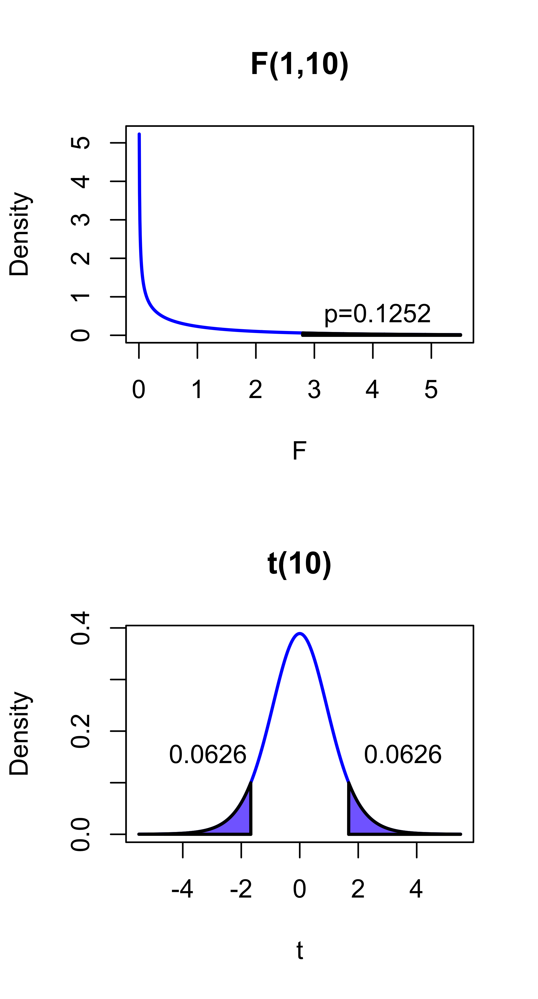

Hypothesis Testing Related to SubModels
STA 721: Lecture 14
Merlise Clyde (clyde@duke.edu)
Duke University
Outline
Hypothesis Testing:
- Testing submodels
- Extra sum of squares
- F-tests
- Null distribution
- Decision procedure
- P-values
- Testing individual coefficients
- t-tests
- Likelihood Ratio Tests
Readings:
- Christensen Appendix C, Chapter 3
Testing Recap
We assume the Gaussian Linear Model \[\quad \quad \quad \quad \quad \quad \quad \quad \text{M1} \quad \mathbf{Y}∼ \textsf{N}(\mathbf{W}\boldsymbol{\alpha}+ \mathbf{X}\boldsymbol{\beta}, \sigma^2\mathbf{I}) \equiv \textsf{N}(\mathbf{Z}\boldsymbol{\theta}, \sigma^2\mathbf{I})\] where \(\mathbf{W}\) is \(n \times q\), \(\mathbf{X}\) is \(n \times p\), \(\mathbf{Z}= [\mathbf{W}\mathbf{X}]\),
We wish to evaluate the hypothesis \(\boldsymbol{\beta}= \mathbf{0}\)
equivalent to comparing M1 to M0: \[\text{M0} \quad \mathbf{Y}∼ \textsf{N}(\mathbf{W}\boldsymbol{\alpha}, \sigma^2\mathbf{I})\]
\(\textsf{SSE}_{M0}/(n-q)\) and \(\textsf{SSE}_{M1}/(n- q - p)\) are unbiased estimates of \(\sigma^2\) under null model M0
but the ratio \(\frac{\textsf{SSE}_{M0}/(n-q)}{\textsf{SSE}_{M1}/(n- q - p)}\) does not have a F distribution
Extra Sum of Squares
Rewrite \(\textsf{SSE}_{M0}\): \[\begin{align*} \textsf{SSE}_{M0} & = \mathbf{Y}^T(\mathbf{I}- \mathbf{P}_{\mathbf{W}})\mathbf{Y}\\ & = \mathbf{Y}^T(\mathbf{I}- \mathbf{P}_{\mathbf{Z}} + \mathbf{P}_{\mathbf{Z}} - \mathbf{P}_{\mathbf{W}})\mathbf{Y}\\ & = \mathbf{Y}^T(\mathbf{I}- \mathbf{P}_{\mathbf{Z}})\mathbf{Y}+ \mathbf{Y}^T(\mathbf{P}_{\mathbf{Z}} - \mathbf{P}_{\mathbf{W}})\mathbf{Y}\\ & = \textsf{SSE}_{M1} + \mathbf{Y}^T(\mathbf{P}_{\mathbf{Z}} - \mathbf{P}_{\mathbf{W}})\mathbf{Y} \end{align*}\]
Extra Sum of Squares: \[\textsf{SSE}_{M0} - \textsf{SSE}_{M1} = \mathbf{Y}^T(\mathbf{P}_{\mathbf{Z}} - \mathbf{P}_{\mathbf{W}})\mathbf{Y}\]
Expectation of Extra Sum of Squares
\(\textsf{E}[\textsf{SSE}_{M0} - \textsf{SSE}_{M1}] = \textsf{E}[\mathbf{Y}^T(\mathbf{P}_{\mathbf{Z}} - \mathbf{P}_{\mathbf{W}})\mathbf{Y}]\)
under M0: \(\boldsymbol{\mu}= \mathbf{W}\boldsymbol{\alpha}\) \[\begin{align*} \textsf{E}[(\mathbf{P}_{\mathbf{Z}} - \mathbf{P}_{\mathbf{W}})\mathbf{Y}] & = \mathbf{P}_{\mathbf{Z}}\mathbf{W}\boldsymbol{\alpha}- \mathbf{P}_{\mathbf{W}}\mathbf{W}\boldsymbol{\alpha}\\ & = \mathbf{W}\boldsymbol{\alpha}\mathbf{W}_\boldsymbol{\alpha}\\ & = \mathbf{0}\\ \textsf{E}[\mathbf{Y}^T(\mathbf{P}_{\mathbf{Z}} - \mathbf{P}_{\mathbf{W}})\mathbf{Y}] & = \sigma^2(\textsf{tr}\mathbf{P}_\mathbf{Z}+ \textsf{tr}\mathbf{P}_\mathbf{W}) \\ & = \sigma^2 (q + p - q) = p \sigma^2 \end{align*}\]
under M1: \(\boldsymbol{\mu}= \mathbf{X}\boldsymbol{\beta}+ \mathbf{W}\boldsymbol{\alpha}\) \[\begin{align*} \textsf{E}[(\mathbf{P}_{\mathbf{Z}} - \mathbf{P}_{\mathbf{W}})\mathbf{Y}] & = \mathbf{X}\boldsymbol{\beta}+ \mathbf{W}\boldsymbol{\alpha}- \mathbf{P}_{\mathbf{W}}\mathbf{X}\boldsymbol{\beta}- \mathbf{W}\boldsymbol{\alpha}\\ & = (\mathbf{I}- \mathbf{P}_{\mathbf{W}})\mathbf{X}\boldsymbol{\beta}\\ \textsf{E}[\mathbf{Y}^T(\mathbf{P}_{\mathbf{Z}} - \mathbf{P}_{\mathbf{W}})\mathbf{Y}] & = p \sigma^2 + \boldsymbol{\beta}^T\mathbf{X}^T(\mathbf{I}- \mathbf{P}_{\mathbf{W}})\mathbf{X}\boldsymbol{\beta} \end{align*}\]
Test Statistic
Propose ratio: \[F = \frac{(\textsf{SSE}_{M0} - \textsf{SSE}_{M1})/p} {\textsf{SSE}_{M1}/(n - q - p)} = \frac{\mathbf{Y}^T(\mathbf{P}_{\mathbf{Z}} - \mathbf{P}_{\mathbf{W}})\mathbf{Y}/p}{\textsf{SSE}_{M1}/(n - q - p)}\] as a test statistic.
Does \(F\) have an F distribution under M0?
- denominator \(\textsf{SSE}_{M1}/\sigma^2\) does have a \(\chi^2\) distribution?
- does numerator \(\textsf{SSE}_{M0}/\sigma^2\) have a \(\chi^2\) distribution?
- are they independent?
Properties of \(\mathbf{P}_{\mathbf{Z}} - \mathbf{P}_{\mathbf{W}}\)
To show that \(\mathbf{Y}^T(\mathbf{P}_{\mathbf{Z}} - \mathbf{P}_{\mathbf{W}})\mathbf{Y}\) has a \(\chi^2\) distribution under M0 or M1, we need to show that \(\mathbf{P}_{\mathbf{Z}} - \mathbf{P}_{\mathbf{W}}\) is a projection matrix.
- symmetric?
- idempotent?
\[\begin{align*} (\mathbf{P}_{\mathbf{Z}} - \mathbf{P}_{\mathbf{W}})^2 & = \mathbf{P}_{\mathbf{Z}}^2 - \mathbf{P}_{\mathbf{Z}}\mathbf{P}_{\mathbf{W}} - \mathbf{P}_{\mathbf{W}}\mathbf{P}_{\mathbf{Z}} + \mathbf{P}_{\mathbf{W}}^2 \\ & = \mathbf{P}_{\mathbf{Z}} - \mathbf{P}_{\mathbf{Z}}\mathbf{P}_{\mathbf{W}} - \mathbf{P}_{\mathbf{W}}\mathbf{P}_{\mathbf{Z}} + \mathbf{P}_{\mathbf{W}} \\ & = \mathbf{P}_{\mathbf{Z}} - \mathbf{P}_{\mathbf{Z}}\mathbf{P}_{\mathbf{W}} - (\mathbf{P}_{\mathbf{Z}}\mathbf{P}_{\mathbf{W}})^T + \mathbf{P}_{\mathbf{W}} \\ & = \mathbf{P}_{\mathbf{Z}} - 2\mathbf{P}_{\mathbf{W}} + \mathbf{P}_{\mathbf{W}} \\ & = \mathbf{P}_{\mathbf{Z}} - \mathbf{P}_{\mathbf{W}} \end{align*}\]
- Note: we are using \(\mathbf{P}_{\mathbf{Z}}\mathbf{P}_{\mathbf{W}} = \mathbf{P}_{\mathbf{W}}\) as each column of \(\mathbf{P}_{\mathbf{W}}\) is in \(C(\mathbf{W})\) and hence also in \(C(\mathbf{Z})\)
So \(\mathbf{P}_{\mathbf{Z}} - \mathbf{P}_{\mathbf{W}}\) is a projection matrix
Projection Matrix \(\mathbf{P}_{\mathbf{Z}} - \mathbf{P}_{\mathbf{W}}\)
Onto what space is it projecting?
Intuitively, it is projecting onto the part of \(\mathbf{X}\) that is not in \(\mathbf{W}\), \(\tilde{\mathbf{X}}= (\mathbf{I}- \mathbf{P}_{\mathbf{W}})\mathbf{X}\) (the part of \(\mathbf{X}\) that is orthogonal to \(\mathbf{W}\))
\(C(\tilde{\mathbf{X}})\) and \(C(\mathbf{W})\) are complementary orthogonal subspaces of \(C(\mathbf{Z})\)
\(\mathbf{P}_{\mathbf{Z}} - \mathbf{P}_{\mathbf{W}}\) is a projection matrix onto \(C(\tilde{\mathbf{X}})\) along \(C(\mathbf{W})\)
we are decomposing \(C(\mathbf{Z})\) into two orthogonal subspaces \(C(\mathbf{W})\) and \(C(\tilde{\mathbf{X}})\)
We can write \(\mathbf{P}_{\mathbf{Z}} = \mathbf{P}_{\tilde{\mathbf{X}}} + \mathbf{P}_{\mathbf{W}}\) where \(\mathbf{P}_{\tilde{\mathbf{X}}} \mathbf{P}_{\mathbf{W}} = \mathbf{P}_{\mathbf{W}} \mathbf{P}_{\tilde{\mathbf{X}}} = \mathbf{0}\)
Note: we can always write \[\begin{align*} \boldsymbol{\mu}& = \mathbf{W}\boldsymbol{\alpha}+ \mathbf{X}\boldsymbol{\beta}\\ & = \mathbf{W}\boldsymbol{\alpha}+ (\mathbf{I}- \mathbf{P}_{\mathbf{W}})\mathbf{X}\boldsymbol{\beta}+ \mathbf{P}_{\mathbf{W}}\mathbf{X}\boldsymbol{\beta}\\ & = \mathbf{W}\tilde{\boldsymbol{\alpha}} + \tilde{\mathbf{X}}\boldsymbol{\beta} \end{align*}\]
Distribution of Extra Sum of Squares
- Since \(\mathbf{P}_{\mathbf{Z}} - \mathbf{P}_{\mathbf{W}}\) is a projection matrix
- \(\mathbf{Y}^T(\mathbf{P}_{\mathbf{Z}} - \mathbf{P}_{\mathbf{W}})\mathbf{Y}/\sigma^2\) has a \(\chi^2_p\) distribution under M0
\[\begin{align*} \mathbf{Y}^T(\mathbf{P}_{\mathbf{Z}} - \mathbf{P}_{\mathbf{W}})\mathbf{Y}& = \|(\mathbf{P}_{\mathbf{Z}} - \mathbf{P}_{\mathbf{W}})\mathbf{Y}\|^2 \\ & = \|(\mathbf{P}_{\mathbf{Z}} - \mathbf{P}_{\mathbf{W}})(\mathbf{X}\boldsymbol{\beta}+ \mathbf{W}\alpha + \boldsymbol{\epsilon}\|^2 \\ & = \|(\mathbf{P}_{\mathbf{Z}} - \mathbf{P}_{\mathbf{W}})(\mathbf{X}\boldsymbol{\beta}\boldsymbol{\epsilon}\|^2 \\ & = \|(\mathbf{P}_{\mathbf{Z}} - \mathbf{P}_{\mathbf{W}})\boldsymbol{\epsilon}\|^2 \quad \text{ if } \boldsymbol{\beta}= \mathbf{0}\\ & = \boldsymbol{\epsilon}^T(\mathbf{P}_{\mathbf{Z}} - \mathbf{P}_{\mathbf{W}})\boldsymbol{\epsilon}\\ & \sim \sigma^2 \chi^2_p \quad \text{ if } \boldsymbol{\beta}= \mathbf{0} \end{align*}\]
- show that \(\mathbf{Y}^T(\mathbf{P}_{\mathbf{Z}} - \mathbf{P}_{\mathbf{W}})\mathbf{Y}\) and \(\mathbf{Y}^T(\mathbf{I}- \mathbf{P}_{\mathbf{Z}})\mathbf{Y}\) are independent
F-Statistic
Under M1: \(\boldsymbol{\beta}= \mathbf{0}\)
\[\begin{align*} F(\mathbf{Y}) & = \frac{(\textsf{SSE}_{M0} - \textsf{SSE}_{M1})/p}{\textsf{SSE}_{M1}/(n - q - p)} \\ & = \frac{(\textsf{SSE}_{M0} - \textsf{SSE}_{M1})/\sigma^2p}{\textsf{SSE}_{M1}/\sigma^2(n - q - p)} \\ & \mathrel{\mathop{=}\limits^{\rm D}}\frac{\chi^2_p/p}{\chi^2_{n-q-p}/(n-q-p)} \\ & \mathrel{\mathop{=}\limits^{\rm D}}F_{p, n-q-p} \end{align*}\]
Under M1, \(\mathbf{Y}^T(\mathbf{P}_{\mathbf{Z}} - \mathbf{P}_{\mathbf{W}})\mathbf{Y}/\sigma^2\) has a non-central \(\chi^2_{p, \eta}\) where the non-centrality parameter \(\eta = \boldsymbol{\beta}^T\mathbf{X}^T(\mathbf{I}- \mathbf{P}_{\mathbf{W}})\mathbf{X}\boldsymbol{\beta}/2\sigma^2\).
\(F\) has a non-central F distribution with \(p\) and \(n-q-p\) degrees of freedom and non-centrality parameter \(\eta = \boldsymbol{\beta}^T\mathbf{X}^T(\mathbf{I}- \mathbf{P}_{\mathbf{W}})\mathbf{X}\boldsymbol{\beta}/2\sigma^2\) (See Christensen Theorem 3.2.1 and Appendix C)
Testing Individual Coefficients
Consider the model with \(p = 1\), \(\mathbf{Y}= \mathbf{W}\boldsymbol{\alpha}+ \mathbf{x}\beta + \boldsymbol{\epsilon}\) and we want to test that \(\beta = 0\) (M0)
- fit the full model and compute \(\textsf{SSE}_{M1}\)
- fit the reduced model and compute \(\textsf{SSE}_{M0}\)
- calculate the \(F\) statistic and \(p\)-value
It turns out that we can obtain this \(F\) statistic by fitting the full model and the test reduces to a familiar \(t\)-test
\[\begin{align*} \hspace{-1in}{\text{Note: }} \hspace{1in} \textsf{SSE}_{M0} - \textsf{SSE}_{M1} & = \mathbf{Y}^T(\mathbf{P}_{\mathbf{Z}} - \mathbf{P}_{\mathbf{W}})\mathbf{Y}\\ & = \|(\mathbf{P}_{\tilde{\mathbf{X}}} + \mathbf{P}_{\mathbf{W}} - \mathbf{P}_{\mathbf{W}})\mathbf{Y}\|^2 \\ & = \|\mathbf{P}_{\tilde{\mathbf{X}}}\mathbf{Y}\|^2 \\ & = \|(\mathbf{I}- \mathbf{P}_{\mathbf{W}})\mathbf{X}\hat{\boldsymbol{\beta}}\|^2 \\ & = \hat{\boldsymbol{\beta}}^T\mathbf{X}^T(\mathbf{I}- \mathbf{P}_{\mathbf{W}})\mathbf{X}\hat{\boldsymbol{\beta}} \end{align*}\]
Testing Individual Coefficients
For \(p = 1\), the \(F\) statistic
\[\begin{align*} F(\mathbf{Y}) & = \frac{(\textsf{SSE}_{M0} - \textsf{SSE}_{M1})/1}{\textsf{SSE}_{M1}/(n - q - 1)} \\ & = \frac{\hat{\beta}^T\mathbf{x}^T(\mathbf{I}- \mathbf{P}_{\mathbf{W}})\mathbf{x}\hat{\beta}}{s^2} \\ & = \frac{\hat{\beta}^2}{s^2/\mathbf{x}^T(\mathbf{I}- \mathbf{P}_{\mathbf{W}})\mathbf{x}} \\ F(\mathbf{Y}) & \sim F_{1, n - q - 1} \quad \text{ under } \beta = 0 \end{align*}\]
- variance of \(\hat{\beta}\): \[\begin{align*} \textsf{var}[\hat{\beta}] & = \sigma^2/\mathbf{x}^T(\mathbf{I}- \mathbf{P}_{\mathbf{W}})\mathbf{x}= \sigma^2 v\\ v & = 1/\mathbf{x}^T(\mathbf{I}- \mathbf{P}_{\mathbf{W}})\mathbf{x} \end{align*}\]
\(t\)-statistic
\[\begin{align*} F(\mathbf{Y}) & = \frac{\hat{\beta}^2}{s^2/\mathbf{x}^T(\mathbf{I}- \mathbf{P}_{\mathbf{W}})\mathbf{x}} = \left(\frac{\hat{\beta}}{s \sqrt{v}}\right)^2 = t(\mathbf{Y})^2 \end{align*}\]
Since \(F(\mathbf{Y}) \sim F(1, n - q - 1)\) under M0: \(\beta = 0\), \(t(\mathbf{Y})^2 \sim F(1,n - q - 1)\) under M0: \(\beta = 0\)
what is distribution of \(t(\mathbf{Y})\) under M0: \(\beta \ne 0\)?
Recall that under M0: \(\beta = 0\),
- \(\hat{\beta}/\sqrt{v\sigma^2} \sim \textsf{N}(0, 1)\)
- \((n-q-1)s^2/\sigma^2 \sim \chi^2_{n-q-1}\)
- \(\hat{\beta}\) and \(s^2\) are independent
Student \(t\) Distribution
Theorem: Student \(t\) Distribution
A random variable \(T\) has a Student \(t\) distribution with \(\nu\) degrees of freedom if \[T \mathrel{\mathop{=}\limits^{\rm D}}\frac{Z}{X/\nu}\]
where \[\begin{align*} Z & \sim \textsf{N}(0,1) \\ X & \sim \chi^2_\nu \\ Z &\text{ and } X \text{ are independent } \end{align*}\]
- \(\therefore \, t(\mathbf{Y}) = \hat{\beta}/\sqrt{v\sigma^2}\) has a Student \(t\) distribution with \(n - q - 1\) degrees of freedom under M0: \(\beta = 0\)
Decision rules and \(p\)-values
an \(F_{1, \nu}\) is equal in distribution to the square of Student \(t_{\nu}\) distribution under the null model (also equal in distribution under the full model, but have a non-centrality parameter)
Decision rule was to reject M0 if \(F(\mathbf{Y}) > F_{1, n - q - 1, \alpha}\)
\(p\)-value is \(\Pr(F_{1, n - q - 1} > F(\mathbf{Y})\); the probability of observing a value of \(F\) as extreme as the observed value under the null model
using a t-distribution, the equivalent decision rule is to reject M0 if \(|t(\mathbf{Y})| > t_{n - q - 1, \alpha/2}\)
\(p\)-value is \(\Pr(|T_{n - q - 1}| > |t(\mathbf{Y})|)\)
equal-tailed \(t\)-test
Likelihood Ratio Tests
we derived the \(F\)-test heurestically, but the formally this test may be derived as a likelihood ratio test.
consider a statistical model \(\mathbf{Y}\sim P, P \in \{P_\boldsymbol{\theta}: \boldsymbol{\theta}\in \boldsymbol{\Theta}\}\)
\(P\) is the true unknown distribution for \(\mathbf{Y}\)
\(\{P_\boldsymbol{\theta}: \boldsymbol{\theta}\in \boldsymbol{\Theta}\}\) is the model, the set of possible distributions for \(\mathbf{Y}\) with \(\boldsymbol{\Theta}\) the parameter space
we might hypothesize that \(\boldsymbol{\theta}\subset \boldsymbol{\Theta}_0 \subset \boldsymbol{\Theta}\)
for our linear model this translates as \(\boldsymbol{\theta}= (\boldsymbol{\alpha}, \boldsymbol{\beta}, \sigma^2) \subset \mathbb{R}^q \times \{\mathbf{0}\} \times \mathbb{R}^+ \subset \mathbb{R}^g \times \mathbb{R}^p \times \mathbb{R}^+\)
compute the likelihood ratio statistic \[R(\mathbf{Y}) = \frac{\sup_{\boldsymbol{\theta}\in \boldsymbol{\Theta}_0} p_\boldsymbol{\theta}(\mathbf{Y}))}{\sup_{\boldsymbol{\theta}\in \boldsymbol{\Theta}} p_\boldsymbol{\theta}(\mathbf{Y}))}\]
Likelihood Ratio Tests
Equivalently, we can look at -2 times the log likelihood ratio statistic \[\lambda(\mathbf{Y}) = -2\log(R(\mathbf{Y})) = -2 [\sup_{\boldsymbol{\theta}\in \boldsymbol{\Theta}_0} \cal{l}(\boldsymbol{\theta})- \sup_{\boldsymbol{\theta}\in \boldsymbol{\Theta}} \cal{l}(\boldsymbol{\theta})]\] where \(\cal{l}(\boldsymbol{\theta}) \propto \log p_\boldsymbol{\theta}(\mathbf{Y})\) (the log likelihood)
Steps:
- Find the MLEs of \(\boldsymbol{\theta}\) in the reduced model \(\boldsymbol{\Theta}_0\), \(\hat{\boldsymbol{\theta}}_0\)
- Find the MLEs of $the full model \(\boldsymbol{\Theta}\), \(\hat{\boldsymbol{\theta}}\)
- Compute \(\lambda(\mathbf{Y}) = -2 [\cal{l}(\hat{\boldsymbol{\theta}}_0)- \cal{l}(\hat{\boldsymbol{\theta}})]\)
- Find the distribution of \(\lambda(\mathbf{Y})\) under the reduced model
with some rearranging and 1-to-1 transformations, can show that this is equivalent to the \(F\)-test! (HW)